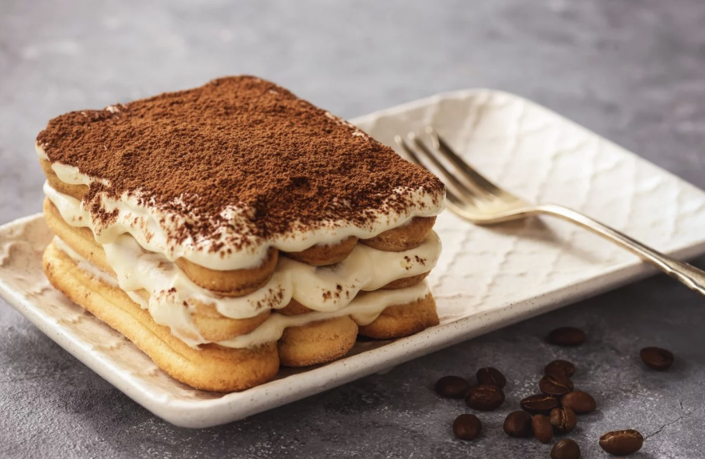

Tiarmisu Recipe
Tiramisu, with its combination of sweet mascarpone, bitter coffee and crumbling biscuits, is the perfect pick-me-up dessert. In fact, tiramisu translates into English as ‘pick me up’ or ‘cheer me up’!
A subtle balancing act between sweet and bitter, the luxurious creaminess of this dish is cut through with the bitter cocoa and coffee flavours, ensuring that it is flavourful without being overpowering.
Ingredients
- 250g mascarpone
- 2 eggs
- 2 spoons of sugar
- 1 cup of Italian coffee
- 0.5 glass of marsala
- Lady fingers biscuits
- Cocoa powder
Instructions
- Separate the eggs, placing the eggs white and eggs yolk to different bowls.
- Whip the whites until quite firm.
- Whisk the yolks and the sugar until it changes colours and becomes pale.
- Add the mascarpone to the yolk and sugar combination.
- Gently fold the egg whites into the mixture.
- Mix the Marsala into the coffee.
- Dip the lady fingers into the coffee for 3 seconds.
- Layer the bottom of the serving glass with the damp biscuits.
- Cover the biscuits with a layer of the cream then layer again with biscuits.
- Repeat until the glass is full.
- Finish the tiramisu with a light dusting of cocoa powder.
Refridgeate for a few hours before serving!